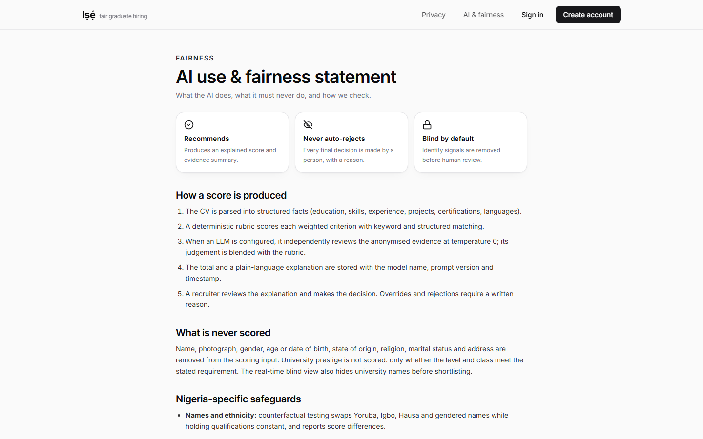
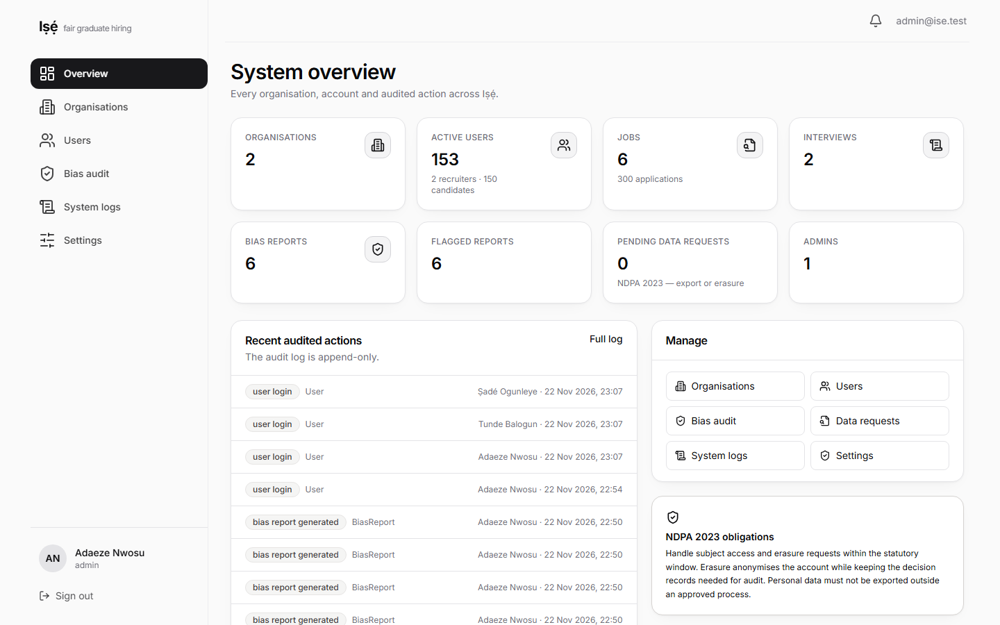
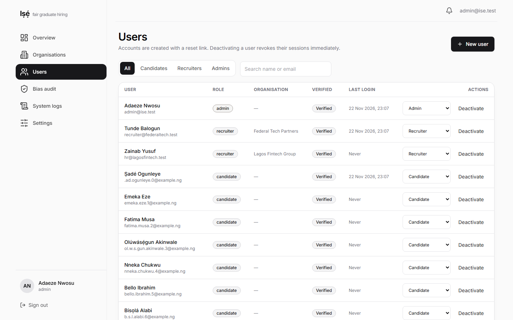

6.3 Evidence from the deployed system — public pages
The screenshots below were captured from the production deployment at
https://ise-three-jade.vercel.app on 22 November 2026, at a viewport of
1440 × 900, driving the same production Convex deployment that serves real requests. Nothing is mocked:
the counters on the landing page are queries against the seeded production database.
Figure 6.1 — Public landing page. The three counters (6 roles, 2 organisations, 6 bias reports) and the “2 flags” snapshot in the audit panel are read live from the production deployment, not hard-coded.Figure 6.2 — Sign-in page. Authentication is one action call; the returned session token is the only credential the browser holds, and the password never leaves the request body unhashed on the client.

Figure 6.3 — The public AI-use and fairness statement, which every registrant must accept. The compliance caveat required by the NDPA analysis appears in the page footer of every screen.
6.3 Evidence — administrator views

Figure 6.4 — Administrator overview for the production dataset: 2 organisations, 153 active users, 6 jobs, 300 applications, 6 bias reports and 6 flagged reports, with the append-only audit feed underneath showing logins, report generation, interview bookings and automated scoring.

Figure 6.5 — User directory with role tabs (all, candidates, recruiters, admins) and a name/email search. The page states that a new account is created with a reset link and that deactivating a user revokes their sessions immediately (TC24).Figure 6.6 — System log with action and entity filters and a CSV export. The visible rows are the six bias-report generations from the seeding run, including their flag counts (8, 7, 5, 5, 6, 6), alongside logins. The table is written only by inserts; there is no update or delete path for audit rows anywhere in the codebase.
6.3 Evidence — audit and recruiter overview
Figure 6.7 — System-wide audit: 300 applications analysed across 6 vacancies, 6 reports generated and 6 containing flags. The per-vacancy flag counts (5 to 8, highest for the Bias Demo vacancy) match those written to the audit log in Figure 6.6, and each report is downloadable from the right-hand list.Figure 6.8 — Recruiter dashboard, scoped to the recruiter's own organisation. Every query behind this page passes the organisation check in Listing 5.3.Figure 6.9 — Vacancy list with application counts and status. A vacancy's criteria, knockout questions, pipeline and audit are reached from this row.